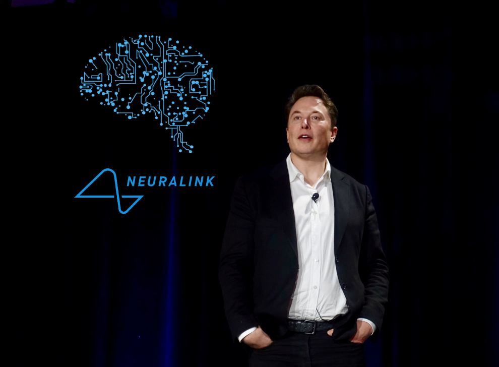
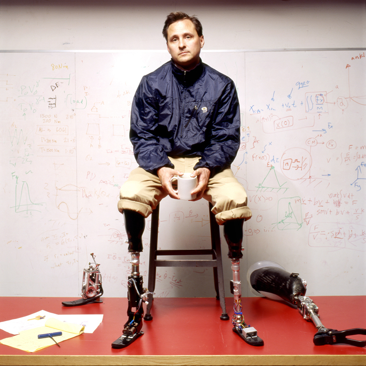
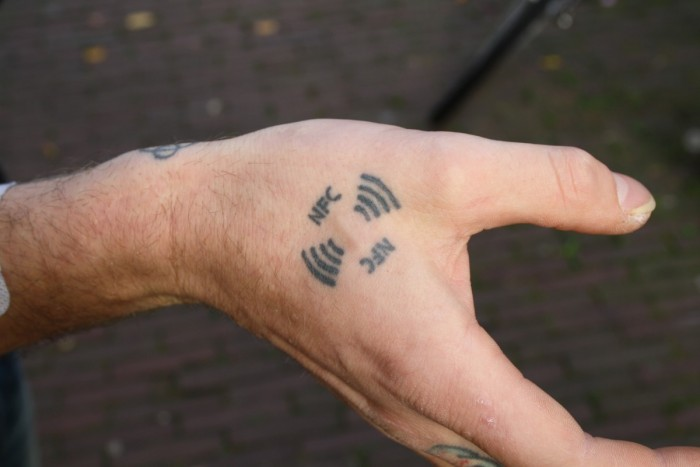
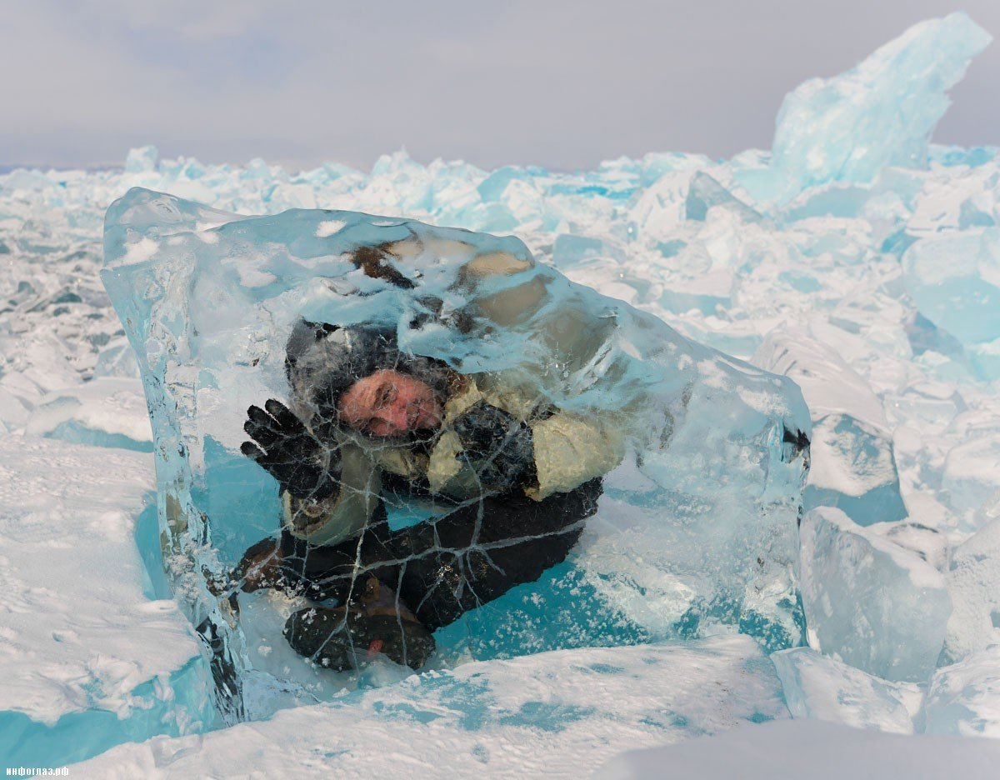

Современные достижения
В настоящее время трансгуманизм находится на начальном этапе своего развития:
формируется целостная философская концепция,
развивается международное общественное движение («humanity+», «Human Enhancement»),
появляются технологии, значительно влияющие на определённые аспекты жизни человека.
Современные достижения науки и техники представляют наибольший интерес, так как они лучше всего описывают трансгуманистическое движение.
Опишем некоторые из них.

Neuralink (Нейролинк)
Нейролинк – американская нейротехнологическая компания, основанная в 2016 году Илоном Маском и планирующая заниматься
разработкой и производством имплантируемых нейрокомпьютерных интерфейсов. Маск заявил, что компания стремится сделать устройства для
лечения серьёзных заболеваний головного мозга в краткосрочной перспективе, а конечная цель состоит в усовершенствовании людей. Спустя
2 года работы компания представила нейроинтерфейсы мозг-машина. Был показан чип N1, который будет вживляться в мозг. Запланированы испытания
на человеке с параличом всех конечностей, которому планируется внедрить четыре 1024 канальных сенсора в первичную моторную кору, в
дополнительную моторную область, в премоторную кору, а также для обратной связи – в первичную соматосенсорную кору. Начальные цели —
добиться «мысленного» ввода текста и управления компьютером и мобильным телефоном.

Бионический человек Хью Герр
Однажды во время одного из сложных подъёмов погодные условия испортились, альпинисты Хью Герр с товарищем попали в метель,
они провели на ветру и морозе несколько часов. У Хью, когда его спасли, были тяжелые отморожения нижних конечностей, его жизнь могла
спасти лишь немедленная ампутация обеих ног. Ему сделали обычные протезы из деревяшек и из резины. Эта ситуация сподвигла его на то,
чтобы заниматься созданием протезов. В старших классах ему удалось сделать собственные протезы, но на этом он решил не останавливаться.
Сегодня Хью возглавляет исследовательскую группу в Массачусетском технологическом институте. Ему удалось разработать бионические конечности.
На каждой – три компьютера, двенадцать сенсоров, которые ведут измерения скорости, позиции, температуры и усилий, которые требуется приложить.
Протезы снабжены электрическими аккумуляторами. Они заряжаются за ночь или за время отдыха. Сейчас параллельно изучается поведение нейронов
при совершении того или иного движения и жеста. Группа готова сделать протезы, которые могут быть подсоединены особым путём к требуемым
участкам головного мозга. То есть практически это уже не протезы. Это уже собственные конечности. Они имеют почти ту же чувствительность,
что и обычные ноги или руки.

Имплантируемые RFID-чипы людям
В 1998 году британский ученый-кибернетик Кевин Уорик решился на необычный и даже новаторский по тем временам эксперимент.
Профессор-киборг, как позже прозвали его в прессе, имплантировал себе в руку небольшую стеклянную капсулу с электромагнитной
катушкой и кремниевым чипом внутри. Чтобы продемонстрировать технологию в действии, он вошел в здание, где тогда работал,
прислонив руку к считывателю. «Доброе утро, профессор Уорик. У вас пять новых писем», — сказал компьютерный голос, активированный
чипом. Этот исследовательский эксперимент должен был продемонстрировать удобство использования RFID-меток в повседневной жизни.
Например, они позволяют держать ключи от дома и пропуск на работу не просто под рукой, а буквально в руке. Тем не менее, по
прошествии двадцати лет после первого эксперимента, многие относятся к подобным «апгрейдам» с недоверием. RFID-метки почти постоянно
используются в повседневной жизни. Они спрятаны в проездных, банковских картах для бесконтактной оплаты, наклейках на товарах в
магазине, биометрических паспортах. Эта технология настолько проста и привычна, что мы и не задумываемся о ее существовании — до
тех пор, конечно, пока нам не предложат вживить чип в руку.
Экзоскелет Ford
Компания Ford приступила к испытаниям уникальной разработки — специального экзоскелета, созданного для сотрудников автомобильных
сборочных линий. Новинка получила название EksoVest. Это совместный проект Ford и калифорнийской фирмы Ekso Bionics. Главная задача
экзоскелета заключается в том, чтобы облегчить выполнение операций, осуществляющихся с поднятыми над головой руками. EksoVest подходит
для людей ростом от 152 до 193 см. Костюм оказывает поддержку в подъёме и удержании предметов весом от 2,3 до 6,8 кг на каждую руку.
Утверждается, что экзоскелет не стесняет движения, а его небольшой вес и компактная конструкция позволяют с комфортом работать
продолжительное время. В настоящее время новинка испытывается на двух сборочных предприятиях Ford в Соединённых Штатах. В дальнейшем
начать тестирование планируется на заводах в Европе и Южной Америке. Ford отмечает, что повторяющиеся изо дня в день операции, которые
выполняют специалисты сборочных линий, приводят к усталости и повышают вероятность получения травм. Экзоскелет EksoVest как раз и призван
решить эти проблемы.

Криоконсервация
Криогенная консервация, по сути, является попыткой сохранить головной мозг и тело человека после его смерти. Эта процедура производится
таким образом, чтобы минимизировать структурные повреждения тканей, сохранив всю важную информацию. В 2015 году двухлетняя тайская девочка,
скончавшаяся от опухоли головного мозга, была заморожена специалистами. Медики надеются, что в обозримом будущем достижения науки помогут
вернуть малышку к жизни. Её имя – Материн Наоваратпонг. На данный момент именно Материн является самым молодым человеком, тело которого
было сохранено с помощью процедуры криогенной заморозки. Оно в настоящее время находится в штате Аризона, в клинике криогеники «Алькор».
Температура среды, в которой хранятся её мозг и тело (отдельно друг от друга), составляет -196°С. Семья Материн Наоваратпонг возлагает
надежду на то, что когда-нибудь наука продвинется настолько далеко, что сможет оживить девочку. Операция «нейро» (консервация мозга) стоила
80 тысяч долларов. Заморозка всего тела Материн обошлась её родителям в 200 тысяч долларов. Ещё 770 долларов им придётся выплачивать
клинике за каждый год её нахождения в криокапсуле.